Реестр изображений: Зал славы бокса
152 файлов в back/public/images, 76 боксёров. Сформирован 2026-11-12 по данным Wikidata и Wikimedia Commons.
152файлов без подтверждённых прав
28Есть замена (общественное достояние)
30Есть замена (CC, нужна атрибуция)
8Есть замена, нужна доработка
10Свободной замены в Wikidata нет
19файлов с кириллицей в имени
Как читать. «Замена» — фото из свойства P18 записи Wikidata, оно всегда лежит на Wikimedia Commons под свободной лицензией или в общественном достоянии.
Для CC BY / CC BY-SA обязательна подпись (готовый текст в колонке «Права»). Для общественного достояния подпись не обязательна, но рекомендуется.
«Общественное достояние» на Commons для американских фото 1930–60-х обычно означает «опубликовано без уведомления или права не продлены» (PD в США). Риск низкий, но в спорных случаях проверяйте страницу файла.
Сопоставление файлов с боксёрами сделано по фамилиям, без доступа к БД: строки с пометкой «уточнить» проверьте.
| Боксёр | Текущие файлы | Свободная замена | Права | Действие / замечания |
|---|---|---|---|---|
| Alexis Argüello Аргуэльо, Алексис Q467944 |
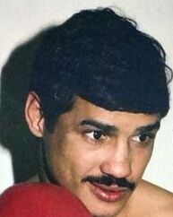 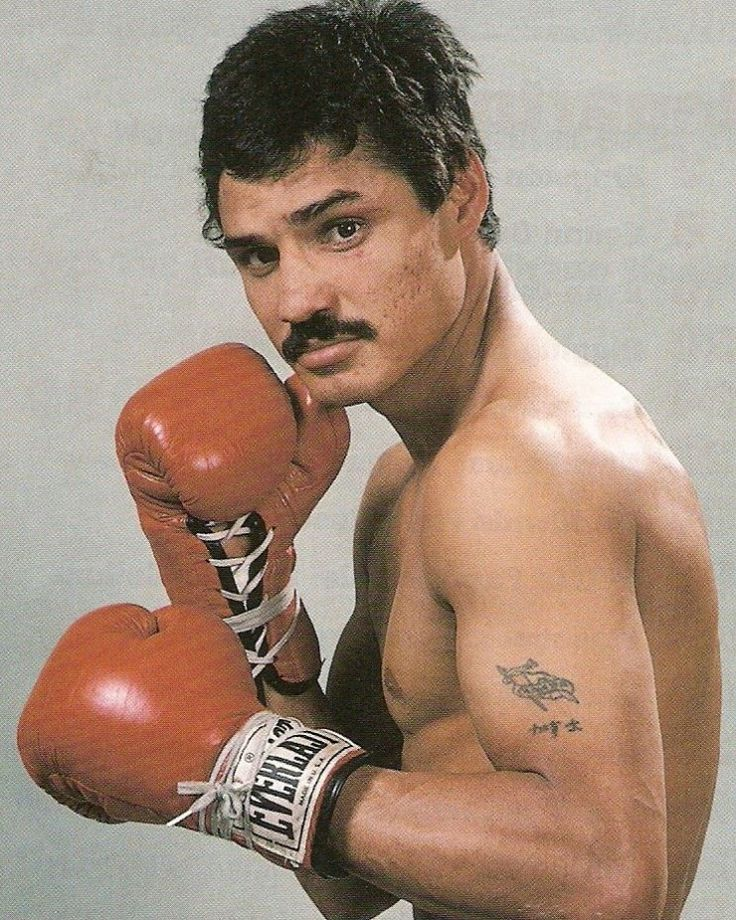 | Есть замена (общественное достояние) Public domain Фото: Bill Apter, Peter King, David Lee Waite or Chaz Fenn (World Boxing magazine) / общественное достояние / Wikimedia Commons |
Заменить файл и добавить подпись Категория: Alexis Argüello (9) | |
| Antonio Cervantes Q601512 |
  | Есть замена (CC, нужна атрибуция) CC BY-SA 2.0 · текст Фото: Francisco Asís / CC BY-SA 2.0 / Wikimedia Commons |
Заменить файл и добавить подпись
| |
| Arturo Gatti Гатти, Артуро Q381484 |
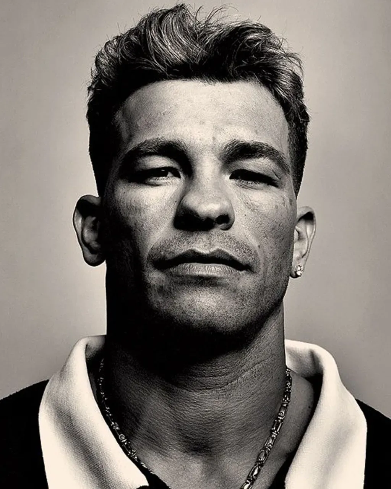 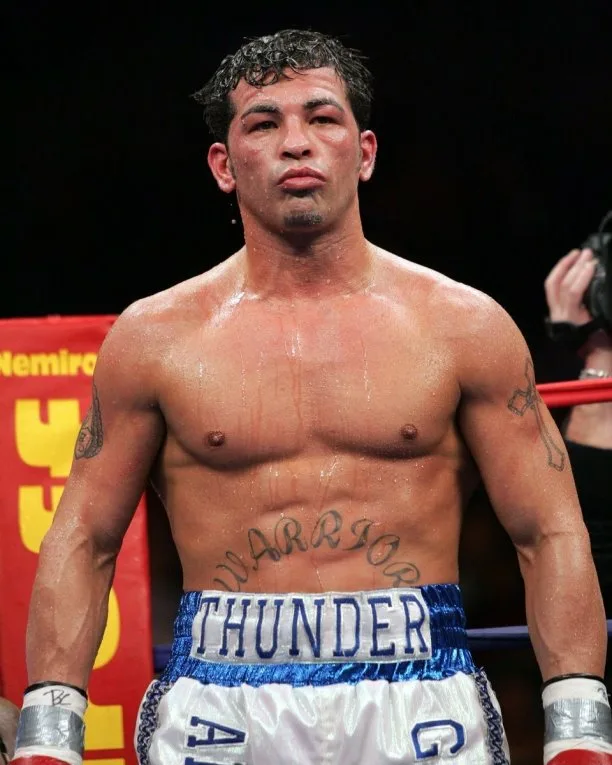 | Есть замена (CC, нужна атрибуция) CC BY-SA 2.0 · текст Фото: Chamber of Fear / CC BY-SA 2.0 / Wikimedia Commons |
Заменить файл и добавить подпись Категория: Arturo Gatti (3) | |
| Beau Jack Джек, Бо Q332351 |
  | Есть замена (общественное достояние) Public domain Фото: автор неизвестен / общественное достояние / Wikimedia Commons |
Заменить файл и добавить подпись Категория: Beau Jack (2) | |
| Bernard Hopkins Хопкинс, Бернард Q531804 |
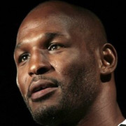 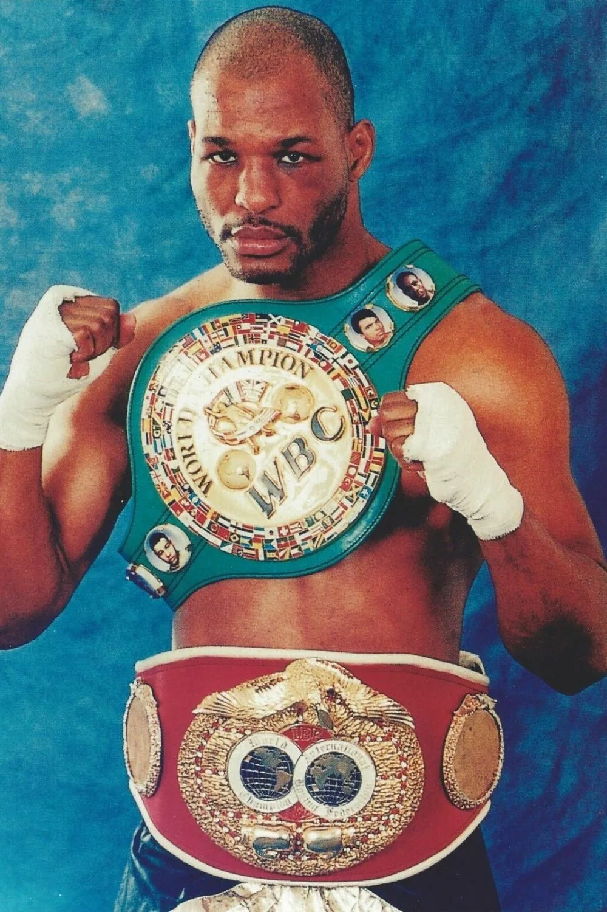 | Есть замена (CC, нужна атрибуция) CC BY 2.0 · текст Фото: DEWALT Fight Night Club 2010 / CC BY 2.0 / Wikimedia Commons |
Заменить файл и добавить подпись Категория: Bernard Hopkins (14) | |
| Billy Conn Конн, Билли Q654686 |
  | Есть замена (общественное достояние) Public domain Фото: автор неизвестен / общественное достояние / Wikimedia Commons |
Заменить файл и добавить подпись
Категория: Billy Conn (8) | |
| Billy Graham Грэм, Билли (боксёр) Q2903646 |
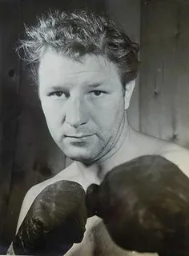 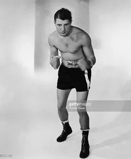 | Есть замена, нужна доработка Public domain Фото: автор неизвестен / общественное достояние / Wikimedia Commons |
Кадр боя с Basilio (открытка): нужна обрезка Категория: Billy Graham (United States boxer) (2) | |
| Bob Foster Фостер, Боб Q887932 |
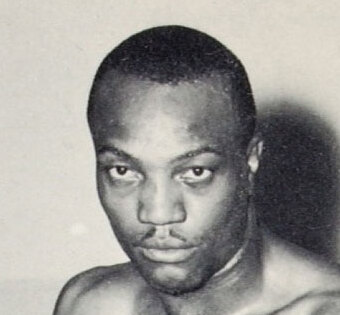 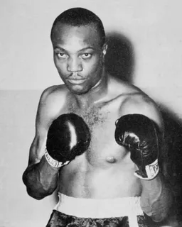 | Есть замена (общественное достояние) Public domain Фото: автор неизвестен / общественное достояние / Wikimedia Commons |
Заменить файл и добавить подпись | |
| Bobby Chacon Чакон, Бобби Q1646226 |
  | Есть замена, нужна доработка CC BY-SA 4.0 · текст Фото: ThePugilist / CC BY-SA 4.0 / Wikimedia Commons |
Кадр боя, формат TIFF: обрезать и конвертировать в WebP/JPG
Категория: Bobby Chacon (1) | |
| Carl Froch Фроч, Карл Q277750 |
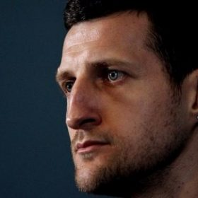 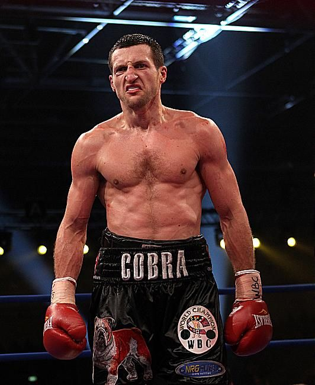 | Есть замена (CC, нужна атрибуция) CC BY 3.0 · текст Фото: Adamj1987 / CC BY 3.0 / Wikimedia Commons |
Заменить файл и добавить подпись Категория: Carl Froch (4) | |
| Carmen Basilio Базилио, Кармен Q723189 |
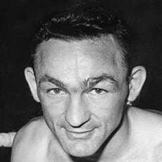 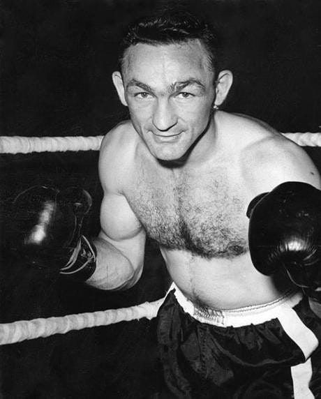 | Есть замена (общественное достояние) Public domain Фото: автор неизвестен / общественное достояние / Wikimedia Commons |
Заменить файл и добавить подпись Категория: Carmen Basilio (6) | |
| Chang Jung-koo Чан Джон Гу Q491728 |
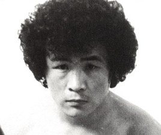 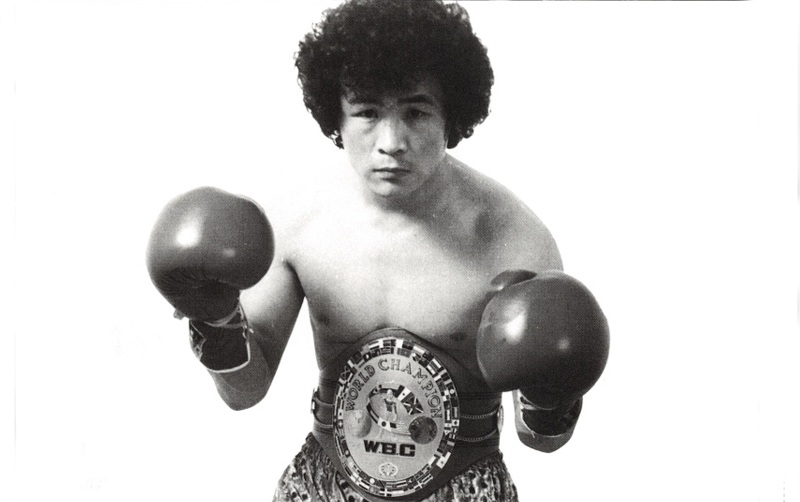 | не найдено |
Свободной замены в Wikidata нет |
Проверить Library of Congress, Openverse; иначе редакционная лицензия (Getty/AP/Alamy) или плейсхолдер |
| Charley Burley Q326882 |
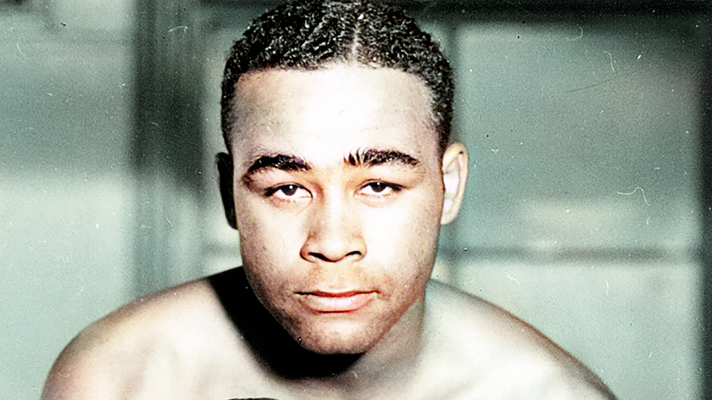 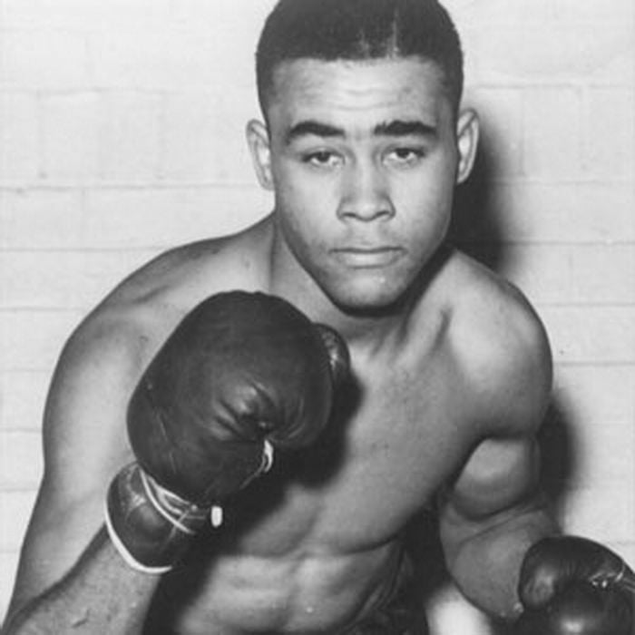 | не найдено |
Свободной замены в Wikidata нет |
Проверить Library of Congress, Openverse; иначе редакционная лицензия (Getty/AP/Alamy) или плейсхолдер |
| Curtis Cokes Кертис Коукс Q2396455 |
  | Есть замена (CC, нужна атрибуция) CC BY 2.0 · текст Фото: Texas A&M University-Commerce Marketing Communications / CC BY 2.0 / Wikimedia Commons |
Заменить файл и добавить подпись
Категория: Curtis Cokes (4) | |
| Diego Corrales Корралес, Диего Q543265 |
  | Есть замена (CC, нужна атрибуция) CC BY 2.0 · текст Фото: Bret Newton / CC BY 2.0 / Wikimedia Commons |
Заменить файл и добавить подпись
Категория: Diego Corrales (1) | |
| Donald Curry Карри, Дональд (боксёр) Q326893 |
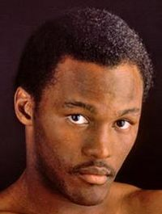 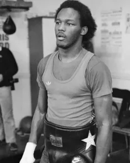 | Есть замена, нужна доработка Public domain Фото: Chaz Fenn / общественное достояние / Wikimedia Commons |
Обложка журнала KO: лучше поискать другое фото | |
| Éder Jofre Жофре, Эдер Q273768 |
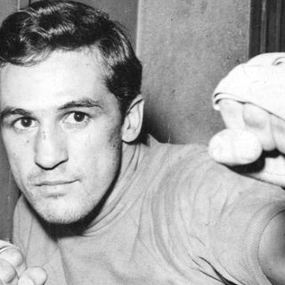 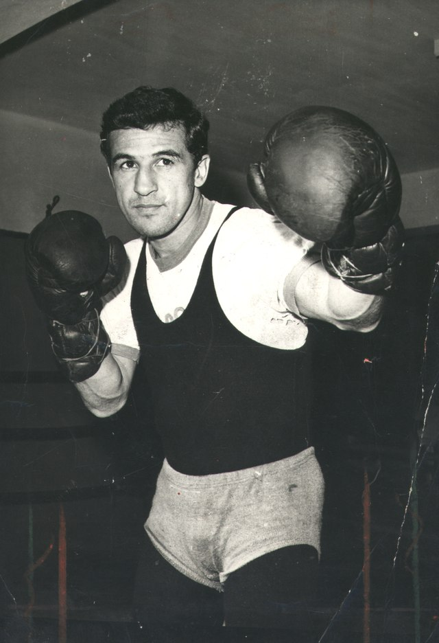 | Есть замена, нужна доработка Public domain Фото: автор неизвестен / общественное достояние / Wikimedia Commons |
Формат TIFF: конвертировать в WebP/JPG Категория: Éder Jofre (12) | |
| Emile Griffith Гриффит, Эмиль Q59051 |
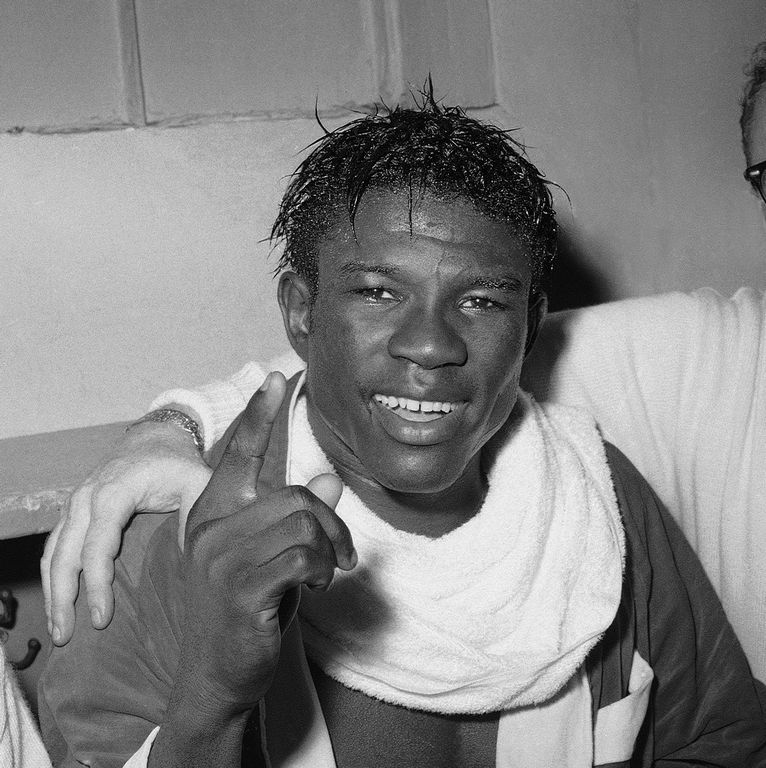 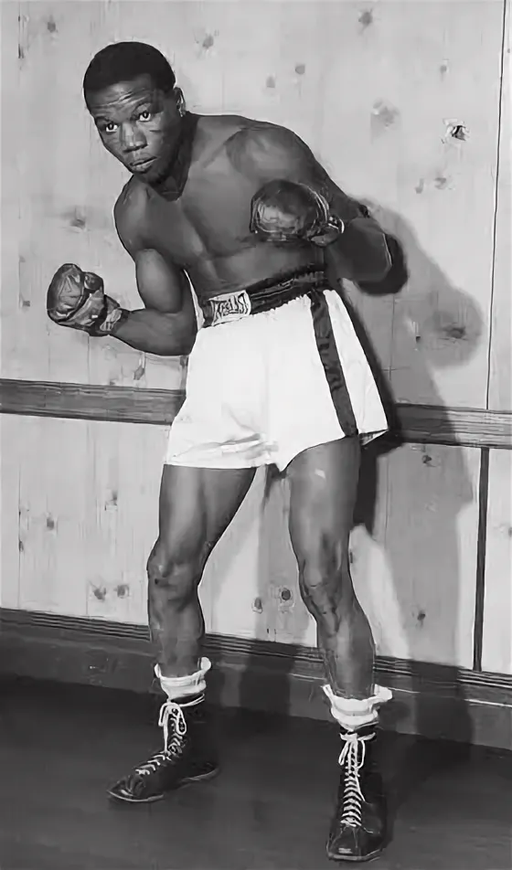 | Есть замена (CC, нужна атрибуция) CC BY-SA 3.0 · текст Фото: Roberto Vicario / CC BY-SA 3.0 / Wikimedia Commons |
Заменить файл и добавить подпись Категория: Emile Griffith (4) | |
| Evander Holyfield Холифилд, Эвандер Q313451 |
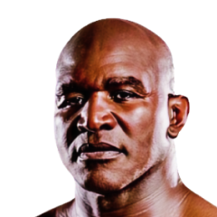 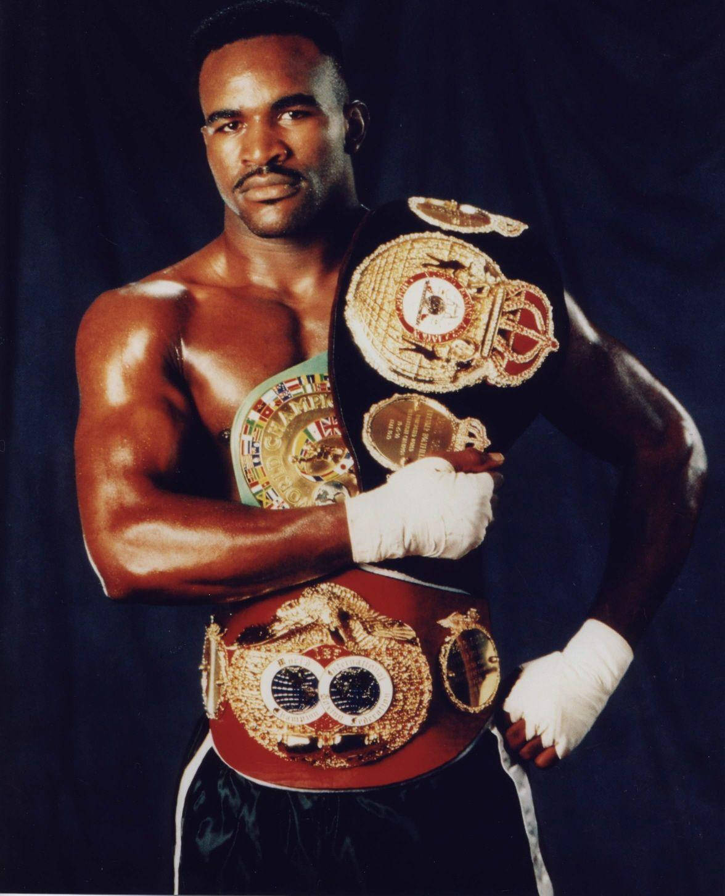 | Есть замена (CC, нужна атрибуция) CC BY-SA 3.0 · текст Фото: Toglenn / CC BY-SA 3.0 / Wikimedia Commons |
Заменить файл и добавить подпись Категория: Evander Holyfield (25) | |
| Ezzard Charles Чарльз, Эззард Q471727 |
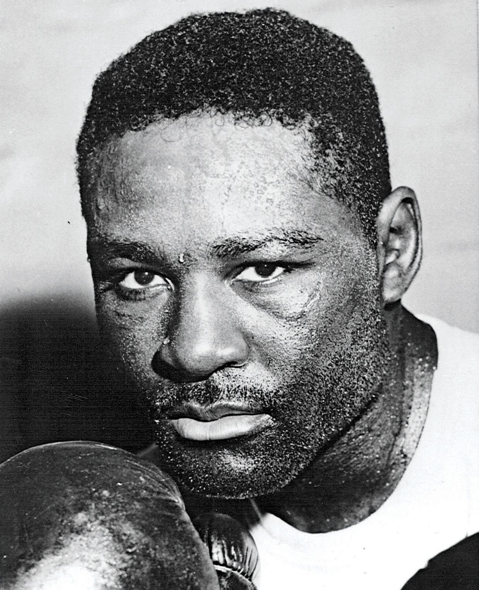  | Есть замена (общественное достояние) Public domain Фото: ACME Newspictures / общественное достояние / Wikimedia Commons |
Заменить файл и добавить подпись
Категория: Ezzard Charles (30) | |
| Fighting Harada Файтинг Харада Q952577 |
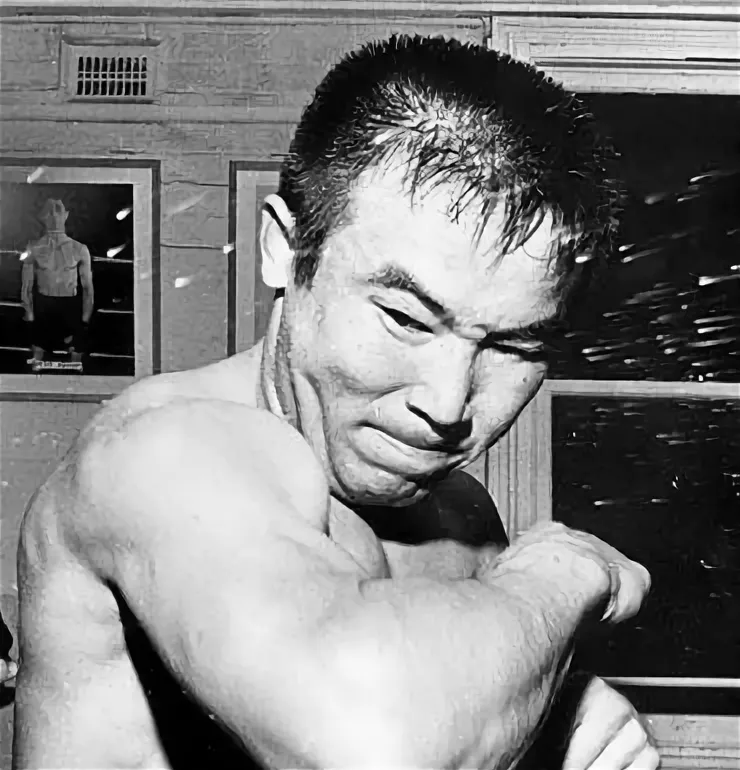 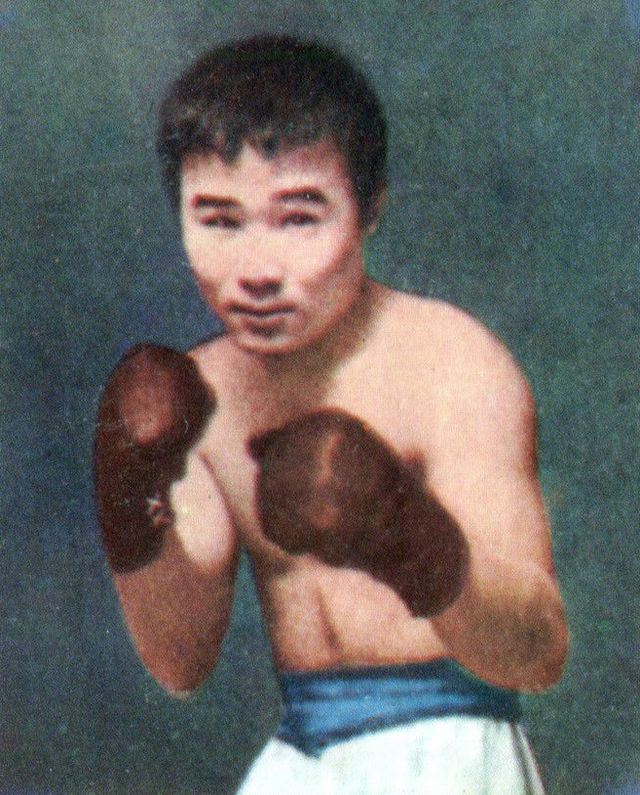 | Есть замена (общественное достояние) Public domain Фото: автор неизвестен / общественное достояние / Wikimedia Commons |
Заменить файл и добавить подпись | |
| Flash Elorde Элорде, Габриэль Q983128 |
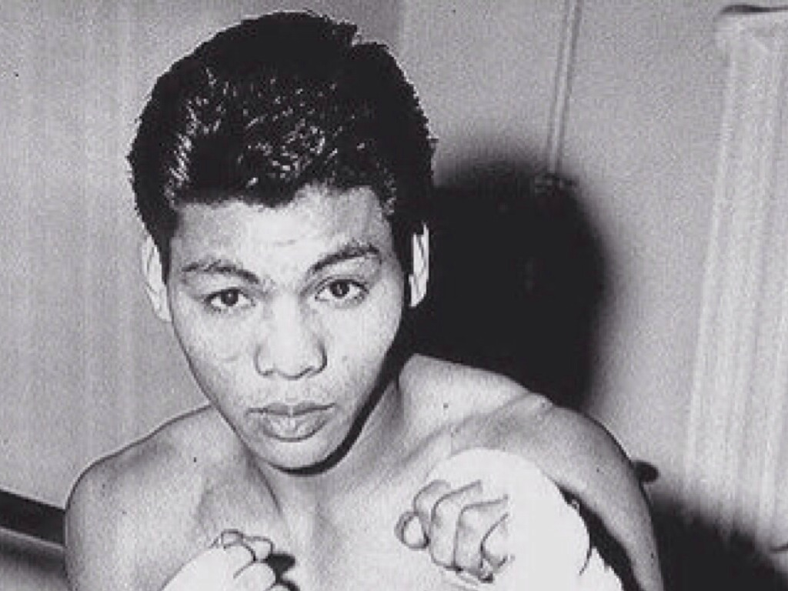 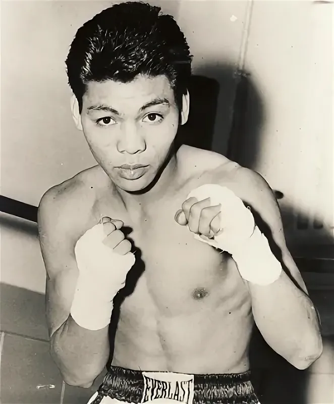 | Есть замена, нужна доработка Public domain Фото: United Press International / общественное достояние / Wikimedia Commons |
Кадр боя: нужна обрезка Категория: Flash Elorde (2) | |
| Fred Apostoli Апостоли, Фред Q593043 |
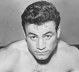 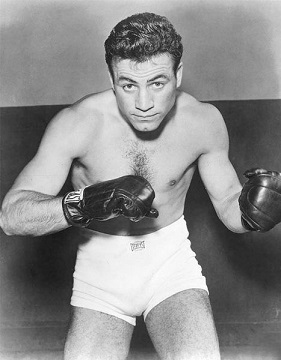 | не найдено |
Свободной замены в Wikidata нет |
Проверить Library of Congress, Openverse; иначе редакционная лицензия (Getty/AP/Alamy) или плейсхолдер |
| Gene Fullmer Фуллмер, Джин Q942573 |
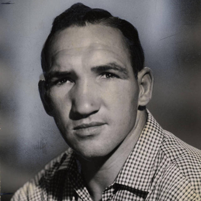 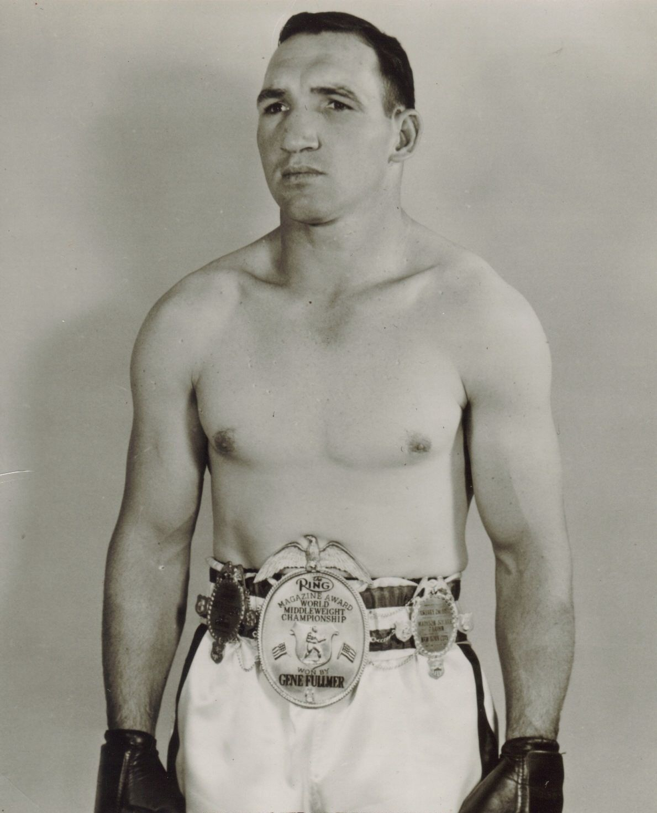 | Есть замена (общественное достояние) Public domain Фото: автор неизвестен / общественное достояние / Wikimedia Commons |
Заменить файл и добавить подпись Категория: Gene Fullmer (1) | |
| George Foreman Форман, Джордж Q213919 |
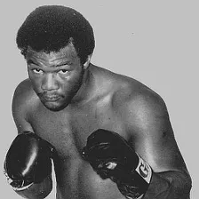 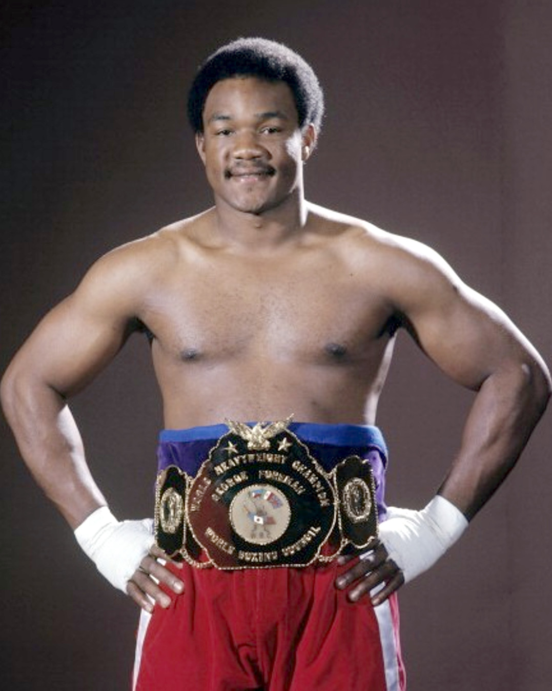 | Есть замена (общественное достояние) CC0 · текст Фото: Bert Verhoeff / Anefo, Nationaal Archief / CC0 / Wikimedia Commons |
Заменить файл и добавить подпись Категория: George Foreman (63) | |
| Harold Johnson Джонсон, Гарольд Q327251 |
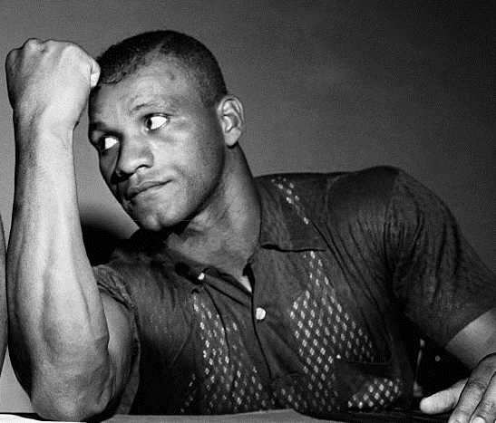 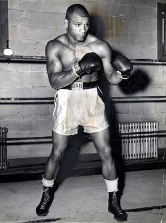 | Есть замена (общественное достояние) Public domain Фото: CBS / общественное достояние / Wikimedia Commons |
Заменить файл и добавить подпись
Категория: Harold Johnson (boxer) (6) | |
| Héctor Camacho Камачо, Эктор Q114355 |
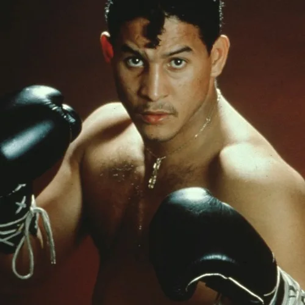 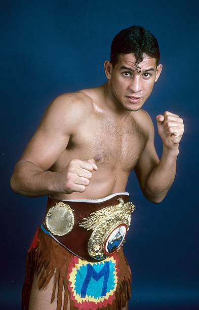 | Есть замена (CC, нужна атрибуция) CC BY 2.0 · текст Фото: Azalia Negron / CC BY 2.0 / Wikimedia Commons |
Заменить файл и добавить подпись Категория: Héctor Camacho (5) | |
| Henry Armstrong Армстронг, Генри (боксёр) Q734339 |
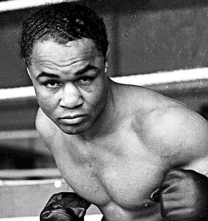 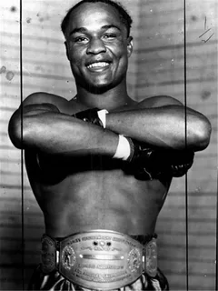 | Есть замена (общественное достояние) Public domain Фото: Carl Van Vechten / общественное достояние / Wikimedia Commons |
Заменить файл и добавить подпись Категория: Henry Armstrong (20) | |
| Humberto González Гонсалес, Умберто Q686726 |
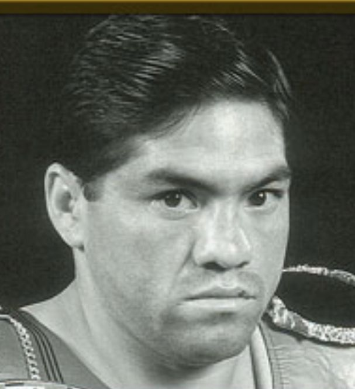 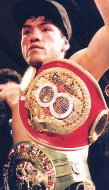 | Есть замена, нужна доработка CC BY-SA 3.0 · текст Фото: Toorumer / CC BY-SA 3.0 / Wikimedia Commons |
Совместное фото: нужна обрезка
| |
| Ingemar Johansson Юханссон, Ингемар Q335872 |
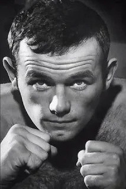 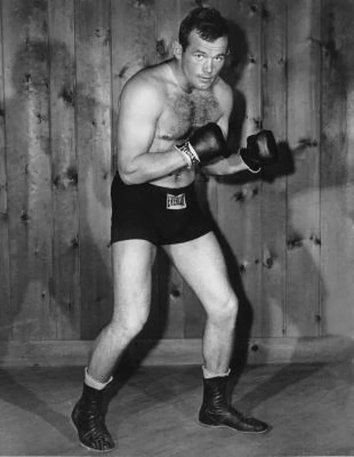 | Есть замена (общественное достояние) Public domain Фото: SCANPIX / общественное достояние / Wikimedia Commons |
Заменить файл и добавить подпись Категория: Ingemar Johansson (33) | |
| Ismael Laguna Q2394608 |
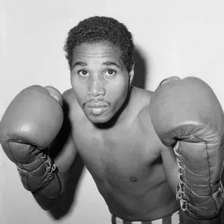 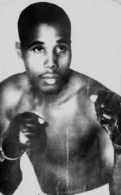 | Есть замена (общественное достояние) Public domain Фото: MCSN Finley Williams, U.S. Navy / общественное достояние / Wikimedia Commons |
Заменить файл и добавить подпись | |
| Iván Calderón Кальдерон, Иван Q586539 |
 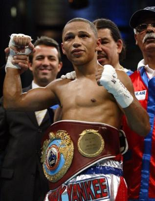 | не найдено |
Свободной замены в Wikidata нет |
Проверить Library of Congress, Openverse; иначе редакционная лицензия (Getty/AP/Alamy) или плейсхолдер
|
| Jack Kid Berg Q305256 |
не найдено |
Свободной замены в Wikidata нет |
Проверить категорию Commons «Jack Kid Berg» (1 файлов), Library of Congress, Openverse; иначе редакционная лицензия (Getty/AP/Alamy) или плейсхолдер Категория: Jack Kid Berg (1) | |
| Jake LaMotta Ламотта, Джейк Q335855 |
Есть замена (общественное достояние) Public domain Фото: автор неизвестен / общественное достояние / Wikimedia Commons |
Заменить файл и добавить подпись Категория: Jake LaMotta (16) | ||
| Jeff Chandler Джефф Чандлер Q466425 |
Есть замена (общественное достояние) Public domain Фото: автор неизвестен / общественное достояние / Wikimedia Commons |
Заменить файл и добавить подпись | ||
| Jeff Fenech Q1686300 |
Есть замена (CC, нужна атрибуция) CC BY-SA 2.0 · текст Фото: Eva Rinaldi / CC BY-SA 2.0 / Wikimedia Commons |
Заменить файл и добавить подпись Категория: Jeff Fenech (19) | ||
| Jimmy Bivins Q718047 |
Есть замена (общественное достояние) Public domain Фото: автор неизвестен / общественное достояние / Wikimedia Commons |
Заменить файл и добавить подпись Категория: Jimmy Bivins (7) | ||
| Jimmy Carter Джимми Картер Q44135 |
Есть замена (общественное достояние) Public domain Фото: автор неизвестен / общественное достояние / Wikimedia Commons |
Заменить файл и добавить подпись
Категория: Jimmy Carter (boxer) (12) | ||
| Joe Brown Браун, Джо (боксёр) Q332060 |
Есть замена (общественное достояние) Public domain Фото: Associated Press / общественное достояние / Wikimedia Commons |
Заменить файл и добавить подпись
Категория: Joe Brown (boxer) (2) | ||
| Joe Calzaghe Кальзаге, Джо Q471383 |
 | Есть замена (CC, нужна атрибуция) CC BY 3.0 · текст Фото: Ben Duffy / CC BY 3.0 / Wikimedia Commons |
Заменить файл и добавить подпись
Категория: Joe Calzaghe (5) | |
| Joey Giardello Джарделло, Джои Q718929 |
Есть замена (общественное достояние) Public domain Фото: автор неизвестен / общественное достояние / Wikimedia Commons |
Заменить файл и добавить подпись Категория: Joey Giardello (9) | ||
| Julian Jackson Джексон, Джулиан Q536126 |
не найдено |
Свободной замены в Wikidata нет |
Проверить Library of Congress, Openverse; иначе редакционная лицензия (Getty/AP/Alamy) или плейсхолдер | |
| Julio César Chávez Чавес, Хулио Сесар Q471461 |
  | Есть замена (CC, нужна атрибуция) CC BY 3.0 · текст Фото: Box Azteca / CC BY 3.0 / Wikimedia Commons |
Заменить файл и добавить подпись
Категория: Julio César Chávez (6) | |
| Ken Buchanan Q2398357 |
Есть замена, нужна доработка CC BY-SA 3.0 · текст Фото: Drnoble / CC BY-SA 3.0 / Wikimedia Commons |
Фото статуи, не портрет: как аватар не подходит | ||
| Khaosai Galaxy Кхаосай Гэлакси Q983358 |
Есть замена (CC, нужна атрибуция) CC BY-SA 3.0 · текст Фото: B20180 / CC BY-SA 3.0 / Wikimedia Commons |
Заменить файл и добавить подпись Категория: Khaosai Galaxy (11) | ||
| Kid Chocolate Q1740848 |
Есть замена (CC, нужна атрибуция) CC BY 4.0 · текст Фото: Los Angeles Times / CC BY 4.0 / Wikimedia Commons |
Заменить файл и добавить подпись
Категория: Kid Chocolate (3) | ||
| Kid Gavilán Херардо Гонсалес Q942060 |
Есть замена (общественное достояние) Public domain Фото: El Gráfico / общественное достояние / Wikimedia Commons |
Заменить файл и добавить подпись Категория: Kid Gavilán (14) | ||
| Larry Holmes Холмс, Ларри Q370932 |
Есть замена (общественное достояние) Public domain Фото: TSgt W. D. Boradman, U.S. Air Force / общественное достояние / Wikimedia Commons |
Заменить файл и добавить подпись Категория: Larry Holmes (18) | ||
| Lew Jenkins Лев Дженкинс Q3237270 |
Есть замена (общественное достояние) Public domain Фото: ACME Newspictures / общественное достояние / Wikimedia Commons |
Заменить файл и добавить подпись | ||
| Marcel Cerdan Сердан, Марсель Q347201 |
  | Есть замена (CC, нужна атрибуция) CC BY-SA 3.0 · текст Фото: Cerdan family archives / CC BY-SA 3.0 / Wikimedia Commons |
Заменить файл и добавить подпись
Категория: Marcel Cerdan (27) | |
| Marco Antonio Barrera Баррера, Марко Антонио Q732316 |
Есть замена (CC, нужна атрибуция) CC BY-SA 2.0 · текст Фото: Daniel Berke / CC BY-SA 2.0 / Wikimedia Commons |
Заменить файл и добавить подпись | ||
| Mark Johnson Джонсон, Марк (боксёр) Q3294120 |
  | не найдено |
Свободной замены в Wikidata нет |
Проверить Library of Congress, Openverse; иначе редакционная лицензия (Getty/AP/Alamy) или плейсхолдер |
| Marvin Hagler Хаглер, Марвин Q560421 |
Есть замена (общественное достояние) Public domain Фото: автор неизвестен / общественное достояние / Wikimedia Commons |
Заменить файл и добавить подпись Категория: Marvelous Marvin Hagler (12) | ||
| Michael Carbajal Карбахаль, Майкл Q1355868 |
Есть замена (CC, нужна атрибуция) CC BY-SA 3.0 · текст Фото: Gage Skidmore / CC BY-SA 3.0 / Wikimedia Commons |
Заменить файл и добавить подпись Категория: Michael Carbajal (16) | ||
| Miguel Canto Q1396384 |
Есть замена (CC, нужна атрибуция) CC BY-SA 3.0 · текст Фото: Perfumuerte / CC BY-SA 3.0 / Wikimedia Commons |
Заменить файл и добавить подпись Категория: Miguel Canto (3) | ||
| Miguel Cotto Котто, Мигель Анхель Q543778 |
  | Есть замена (CC, нужна атрибуция) CC BY-SA 2.0 · текст Фото: Chamber of Fear / CC BY-SA 2.0 / Wikimedia Commons |
Заменить файл и добавить подпись
Категория: Miguel Cotto (5) | |
| Muhammad Ali Али, Мухаммед Q36107 |
Есть замена (общественное достояние) Public domain Фото: Ira Rosenberg / общественное достояние / Wikimedia Commons |
Заменить файл и добавить подпись Категория: Muhammad Ali (61) | ||
| Naseem Hamed Хамед, Насим Q1355898 |
Есть замена, нужна доработка CC BY-SA 2.0 · текст Фото: Mandy Coombes / CC BY-SA 2.0 / Wikimedia Commons |
Снимок с шоу WWE (1999): проверить, подходит ли Категория: Naseem Hamed (3) | ||
| Nino Benvenuti Бенвенути, Нино Q1800396 |
Есть замена (CC, нужна атрибуция) Attribution Фото: Presidenza della Repubblica Italiana (edited by Lucas) / Attribution / Wikimedia Commons |
Заменить файл и добавить подпись Категория: Nino Benvenuti (23) | ||
| Orlando Canizales Каньисалес, Орландо Q2393866 |
не найдено |
Свободной замены в Wikidata нет |
Проверить категорию Commons «Orlando Canizales» (1 файлов), Library of Congress, Openverse; иначе редакционная лицензия (Getty/AP/Alamy) или плейсхолдер Категория: Orlando Canizales (1) | |
| Oscar De La Hoya Де Ла Хойя, Оскар Q293534 |
Есть замена (CC, нужна атрибуция) CC BY 2.0 · текст Фото: DEWALT Fight Night Club 2010 / CC BY 2.0 / Wikimedia Commons |
Заменить файл и добавить подпись Категория: Oscar De La Hoya (17) | ||
| Pipino Cuevas Q1368771 |
Есть замена (общественное достояние) Public domain Фото: KO Magazine / общественное достояние / Wikimedia Commons |
Заменить файл и добавить подпись | ||
| Ricky Hatton Хаттон, Рикки Q116516 |
Есть замена (CC, нужна атрибуция) CC BY 2.0 · текст Фото: SamboD / CC BY 2.0 / Wikimedia Commons |
Заменить файл и добавить подпись Категория: Ricky Hatton (28) | ||
| Riddick Bowe Боу, Риддик Q708185 |
Есть замена (общественное достояние) Public domain Фото: SPC Michael Halgren, U.S. Army / общественное достояние / Wikimedia Commons |
Заменить файл и добавить подпись Категория: Riddick Bowe (6) | ||
| Roberto Durán Дуран, Роберто Q471571 |
Есть замена (CC, нужна атрибуция) CC BY 2.0 · текст Фото: Jim Accordino / CC BY 2.0 / Wikimedia Commons |
Заменить файл и добавить подпись Категория: Roberto Duran (15) | ||
| Rocky Graziano Грациано, Рокки Q454699 |
Есть замена (общественное достояние) Public domain Фото: автор неизвестен / общественное достояние / Wikimedia Commons |
Заменить файл и добавить подпись Категория: Rocky Graziano (8) | ||
| Roy Jones Jr. Джонс, Рой Q955619 |
  | Есть замена (CC, нужна атрибуция) CC BY-SA 3.0 · текст Фото: Fedyanin Nikita / CC BY-SA 3.0 / Wikimedia Commons |
Заменить файл и добавить подпись Категория: Roy Jones, Jr. (19) | |
| Sammy Angott Q115033 |
Есть замена (общественное достояние) Public domain Фото: автор неизвестен / общественное достояние / Wikimedia Commons |
Заменить файл и добавить подпись Категория: Sammy Angott (7) | ||
| Thomas Hearns Хирнс, Томас Q560409 |
Есть замена (CC, нужна атрибуция) CC BY 2.0 · текст Фото: Kaloozer / CC BY 2.0 / Wikimedia Commons |
Заменить файл и добавить подпись Категория: Thomas Hearns (11) | ||
| Timothy Bradley Брэдли, Тимоти Q1396202 |
не найдено |
Свободной замены в Wikidata нет |
Проверить Library of Congress, Openverse; иначе редакционная лицензия (Getty/AP/Alamy) или плейсхолдер | |
| Víctor Galíndez Q719662 |
не найдено |
Свободной замены в Wikidata нет |
Проверить категорию Commons «Victor Galíndez» (5 файлов), Library of Congress, Openverse; иначе редакционная лицензия (Getty/AP/Alamy) или плейсхолдер Категория: Victor Galíndez (5) | |
| Virgil Hill Хилл, Вирджил Q1341919 |
Есть замена (CC, нужна атрибуция) CC BY-SA 4.0 · текст Фото: Shane Balkowitsch / CC BY-SA 4.0 / Wikimedia Commons |
Заменить файл и добавить подпись | ||
| Vitali Klitschko Кличко, Виталий Владимирович Q31919 |
Есть замена (CC, нужна атрибуция) CC BY 4.0 · текст Фото: Kyiv City State Administration / CC BY 4.0 / Wikimedia Commons |
Заменить файл и добавить подпись
Категория: Vitali Klitschko (12) | ||
| Wilfred Benítez Бенитес, Вильфред Q1386541 |
Есть замена (CC, нужна атрибуция) CC BY-SA 3.0 · текст Фото: Prebbleqram / CC BY-SA 3.0 / Wikimedia Commons |
Заменить файл и добавить подпись Категория: Wilfred Benítez (3) | ||
| Wilfredo Gómez Гомес, Вильфредо Q1972279 |
Есть замена (CC, нужна атрибуция) CC BY-SA 3.0 · текст Фото: Unknown photographer (cropped by Materialscientist) / CC BY-SA 3.0 / Wikimedia Commons |
Заменить файл и добавить подпись | ||
| Wladimir Klitschko Кличко, Владимир Владимирович Q18797 |
  | Есть замена (CC, нужна атрибуция) CC BY-SA 4.0 · текст Фото: Fuzheado / CC BY-SA 4.0 / Wikimedia Commons |
Заменить файл и добавить подпись Категория: Volodymyr Klychko (12) |


.jpg)


_in_KO_Magazine.jpg)


.jpg)


.jpg)


.JPG)


.jpg)


.png)
.jpg)
.jpg)
.jpg)


.jpg)